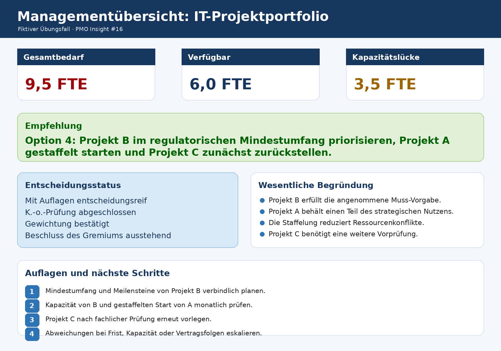
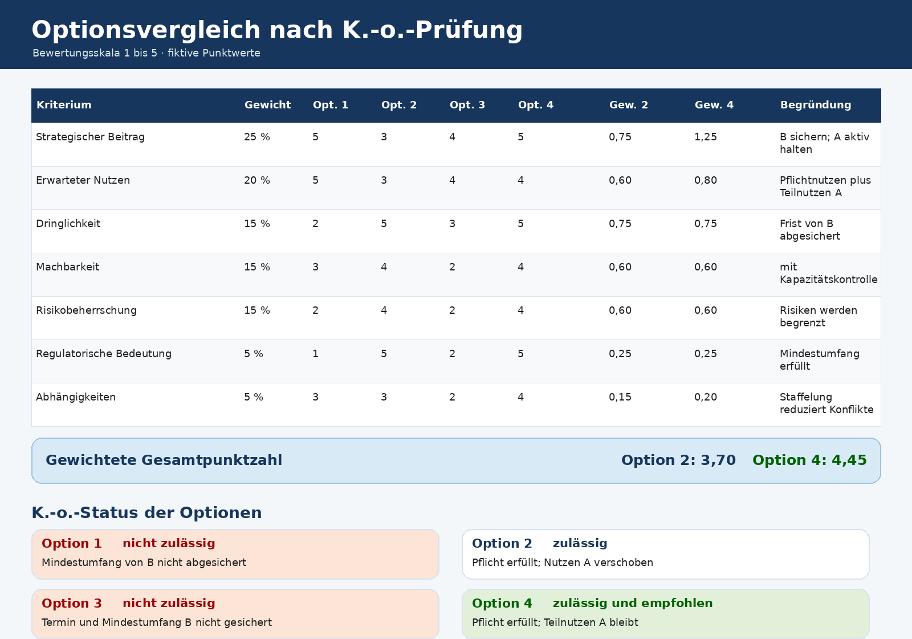
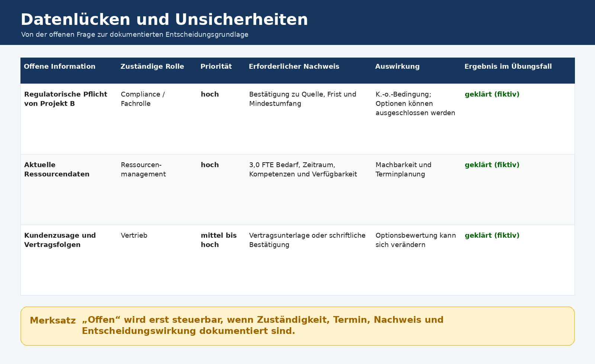

9,5 FTE
Gesamtbedarf der drei Projekte
PMO Insight #16 · Portfolio · Entscheidungsreife · Governance
Eine Empfehlung ist noch keine Entscheidung. Erst wenn Datengrundlage, zwingende Voraussetzungen, Alternativen, Auswirkungen und Risiken nachvollziehbar geprüft sind, kann das zuständige Gremium verantwortbar entscheiden.
Hinweis zum Übungsfall: Alle Projekte, Klärungsergebnisse, Bewertungen und Bestätigungen sind fiktiv. Die Arbeitsprobe zeigt die methodische Aufbereitung einer Portfolioentscheidung und keine Entscheidung einer realen Organisation.
Ausgangslage
Für diese praktische Arbeitsprobe habe ich eine fiktive Entscheidungssituation mit drei IT-Projekten aufgebaut: einem digitalen Kundenportal (Projekt A), einem digitalen Rechnungsprozess (Projekt B) und einem KI-Wissensassistenten (Projekt C).
Gesamtbedarf der drei Projekte
Verfügbare Kapazität
Kapazitätslücke
Bei der technischen und methodischen Ausarbeitung habe ich KI-gestützte Unterstützung genutzt. Die Prüflogik, Annahmen und Ergebnisse habe ich anschließend schrittweise nachvollzogen, hinterfragt und in einer zusammenhängenden Arbeitsmappe dokumentiert.
Prüflogik
Im Tabellenblatt „Datenlücken und Unsicherheiten“ werden regulatorische Anforderungen, Ressourcendaten und Kundenzusagen mit Zuständigkeit, Klärungstermin, erforderlichem Nachweis und Auswirkung auf die Entscheidungsreife erfasst.
Im Szenario gelten die verbindliche Frist und ein Mindestumfang für Projekt B als bestätigt. Option 1 und Option 3 scheiden aus; Option 2 und Option 4 bleiben zulässig.
Für den Vergleich habe ich sieben Kriterien mit insgesamt 100 Prozent festgelegt:
Die Gewichte sind begründungsbedürftige Annahmen für diesen Übungsfall und keine allgemeingültige Vorgabe.
Die Optionen werden auf einer Skala von 1 bis 5 bewertet. Excel berechnet daraus die gewichteten Punktwerte. Das zusätzliche Tabellenblatt „Bewertungsbegründungen“ dokumentiert, warum eine Option besser oder schlechter abschneidet.
Zum Schluss prüft die Arbeitsmappe Quellen, Datenlücken, K.-o.-Kriterien, Gewichtungen, Auswirkungen, Alternativen, Ressourcen und Entscheidungsrollen. Option 4 gilt nur unter monatlicher Kapazitätskontrolle als machbar.
Ergebnis

Arbeitsprobe
Der Vergleich zeigt die Kriterien, Gewichtungen, Punktwerte und den K.-o.-Status. Nur die zulässigen Optionen werden in die abschließende Rangfolge aufgenommen.

Offene Informationen werden nicht nur als „offen“ markiert. Zuständigkeit, Priorität, Nachweis und Auswirkung auf die Entscheidung werden sichtbar dokumentiert.

Lernerkenntnis
Eine Entscheidungsvorlage braucht mehr als eine berechnete Rangfolge. Daten müssen nachvollziehbar sein, zwingende Voraussetzungen müssen vor der Bewertung geprüft werden und jede Punktzahl benötigt eine Begründung. Zusätzlich muss sichtbar bleiben, welche Auflagen gelten und wer die Entscheidung treffen darf.
Das PMO strukturiert und dokumentiert die Entscheidungsgrundlage. Fachrollen bestätigen die jeweiligen Sachverhalte; das zuständige Gremium trägt die Entscheidung.
Microsoft Excel, strukturierte Nutzwertbetrachtung, K.-o.-Prüfung und KI-gestützte Reflexion
Konzeption, Strukturierung, Plausibilitätsprüfung und Dokumentation eines fiktiven PMO-Übungsfalls